Herramientas de Desarrollo Modernas
Tópicos Avanzados de Programación
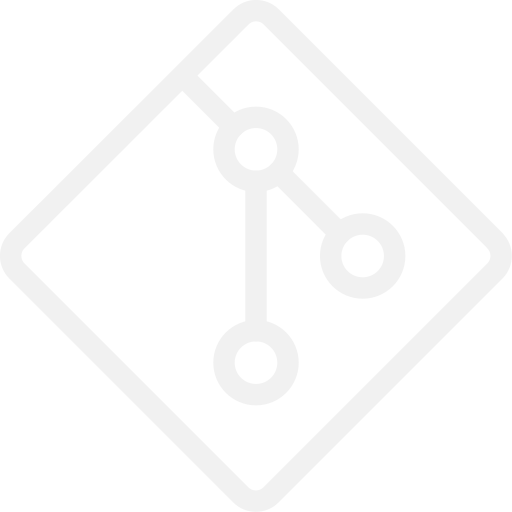
Entendiendo Git
(finalmente)
Todos usamos git, y mucho.
Quién tuvo problemas con Git alguna vez?
Entendemos qué es un commit? Y un branch? Y un rebase?
Muchos de los problemas pasan por no entender esas cosas.
No vamos a hacer un tutorial de Git. Asumimos que saben lo básico a esta altura.
Vamos a entender cómo funciona, para que lo sepan usar mejor.
Commit
Foto de los archivos del repo + metadata.
Qué guarda un commit?
- No guarda un diff!
- Archivos modificados: nueva copia del archivo.
- Archivos sin cambios: reusa link al existente.
Dónde se guarda?
Base de datos de grafos inmutables!
Es lo que hay dentro del directorio .git.
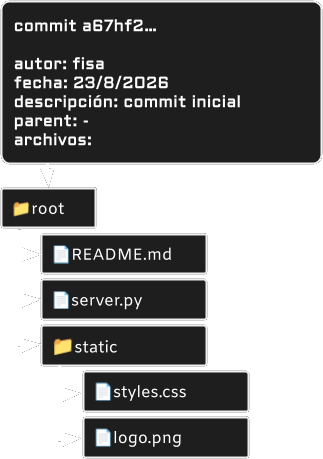
# creamos un nuevo commit modificando solo server.py
git commit -m "mejorado server" server.py
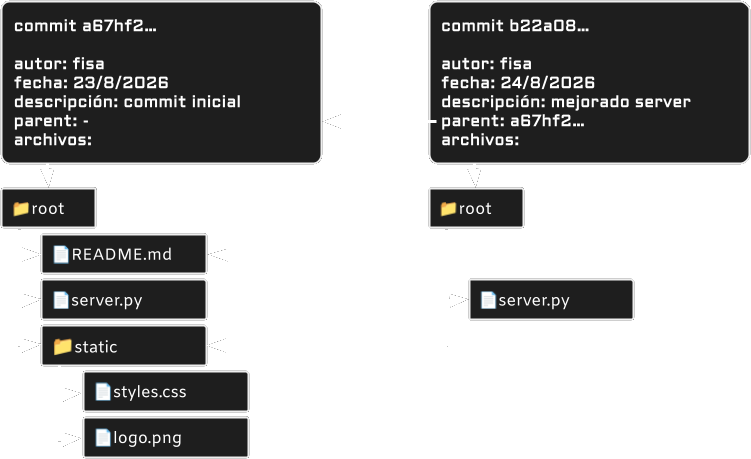
Es eficiente en uso de disco?
❌ Guarda N versiones (enteras) de cada archivo.
✅ Pero entre commits los archivos sin cambios no guardan nuevas copias.
✅ ...y además cada tanto se comprime el repo, reduciendo mucho la duplicación.
En la práctica termina siendo muy eficiente.
Y además eso hace que sea super rápido!
Ej: cómo obtenemos la versión X de un archivo?
En Git:
🏃♀️ Ir al commit, seguir las flechas, y llegamos al archivo tal cual lo queremos.
En versionado que guarde diffs:
🐢 Ir al commit inicial, y aplicar un montón de diffs hasta llegar a la versión deseada.
Y qué pasa con archivos grandes que cambian mucho?...
Un dataset de 100MB que actualizo seguido, una red neuronal entrenada, etc.
✅ Opción 1: no guardar en el repo!
✅ Opción 2: Git LFS, extensión que guarda esos archivos en otro lado (servidor de LFS), pero "parece" que están dentro del repo.
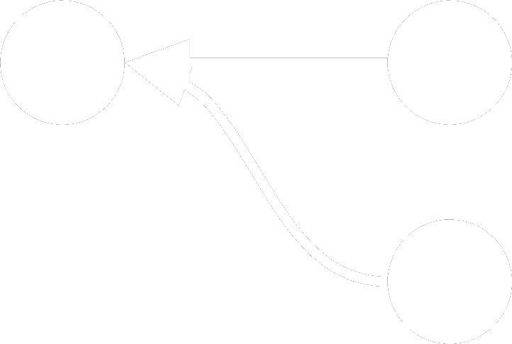
Branch
Una "versión" paralela donde puedo trabajar de manera independiente.
Cuántos branches hay en esta historia de commits?
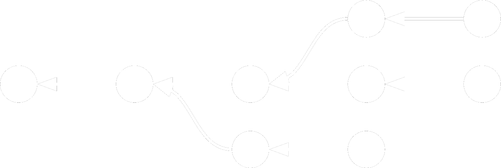
No sabemos! No necesariamente 3.
❌ Un branch no es un conjunto de commits.
❌ Un branch no es una rama de commmits.
Un branch es un puntero a un commit, movible.
Si tenemos un branch "activo", al commitear se mueve el puntero.
# activamos el branch main
git switch main
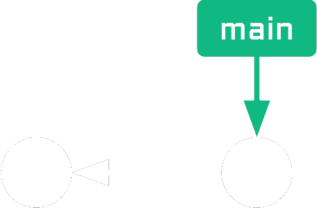
# commiteamos teniendo "main" activo
git commit -m "mejorado server" server.py

# creamos un nuevo branch para trabajar en otra feature
git branch feature
# y activamos ese nuevo branch
git switch feature
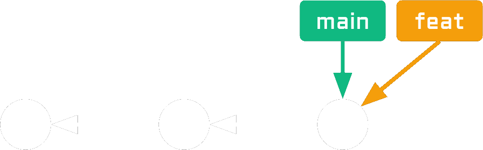
# commiteamos teniendo "feature" activo
git commit -m "hecho async para mejor performance" server.py
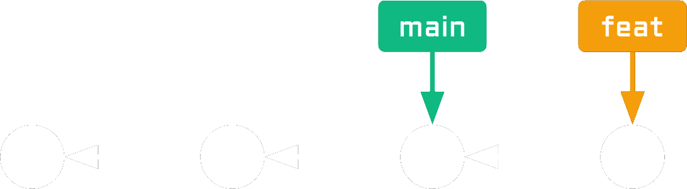
# volvemos a main, hay que arreglar algo urgenge!
# (feature no está terminada, no queremos mezclarla con main)
git switch main
git commit -m "arreglado bug en server" server.py
git commit -m "arreglado otro bug más en server" server.py
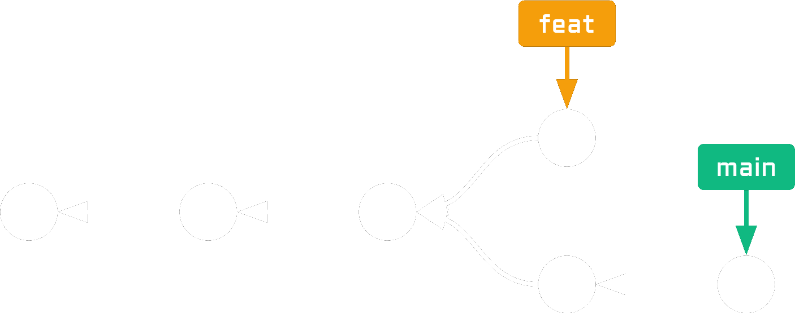
# me piden que deje de trabajar en la feature,
# y me ponga a trabajar en estabilidad
git branch stability
git switch stability
git commit -m "hecho más estable" server.py
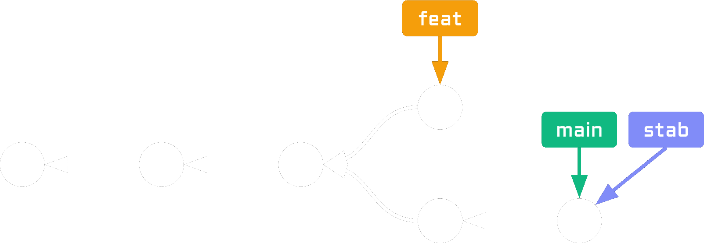
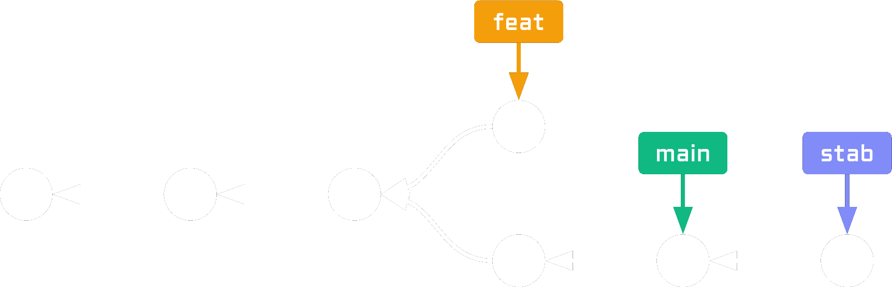
Por eso en este caso, no tenemos forma de saber cuántos branches hay :)
Bonus: podemos hacer que un branch apunte a lo que queramos...
# forzar a que un branch apunte a un commit específico
git branch -f BRANCH COMMIT
En general: no lo hagan!!
Tags
Nombres para versiones puntuales.
- Un branch es un tag que avanza solo.
- Un tag es un tag que no avanza solo.
- Nos sirven para referenciar versiones de nuestra app: v1.0, v2.1, ...
- A diferencia de un branch, no tenemos un "tag activo" que avance si commiteamos.
# activamos el branch main
git switch main
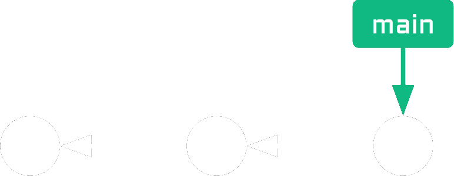
# creamos un tag
git tag v1.0
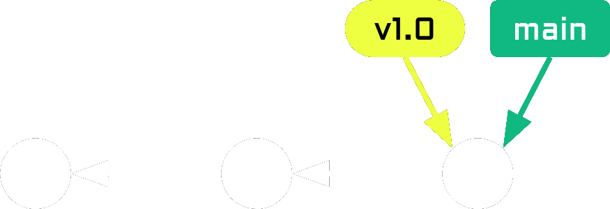
# commiteamos cambios
git commit -m "mejorado server" server.py
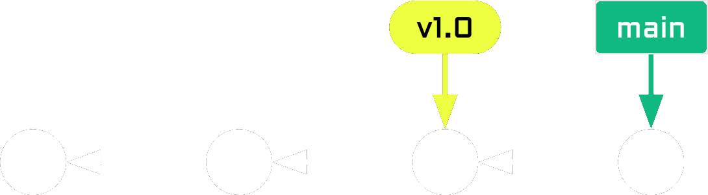
El tag v1.0 sigue apuntando al commit que le dijimos, no se mueve. El branch (main) es el que se mueve.
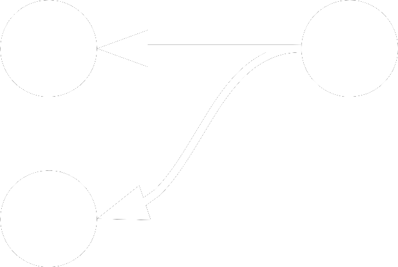
Merge
Traerme a un branch los cambios de otro branch.
Qué hace Git en un merge?
Ej: estoy en "main", y hago "git merge featureX"
- Busca el último punto en común entre main y featureX.
- Lista los commits entre el punto común y featureX, que main no tenga en su historia.
- Crea un nuevo commit en main condensando todos esos commits faltantes en uno solo.
- El nuevo commit apunta a los dos commits a los que los branches apuntaban antes.
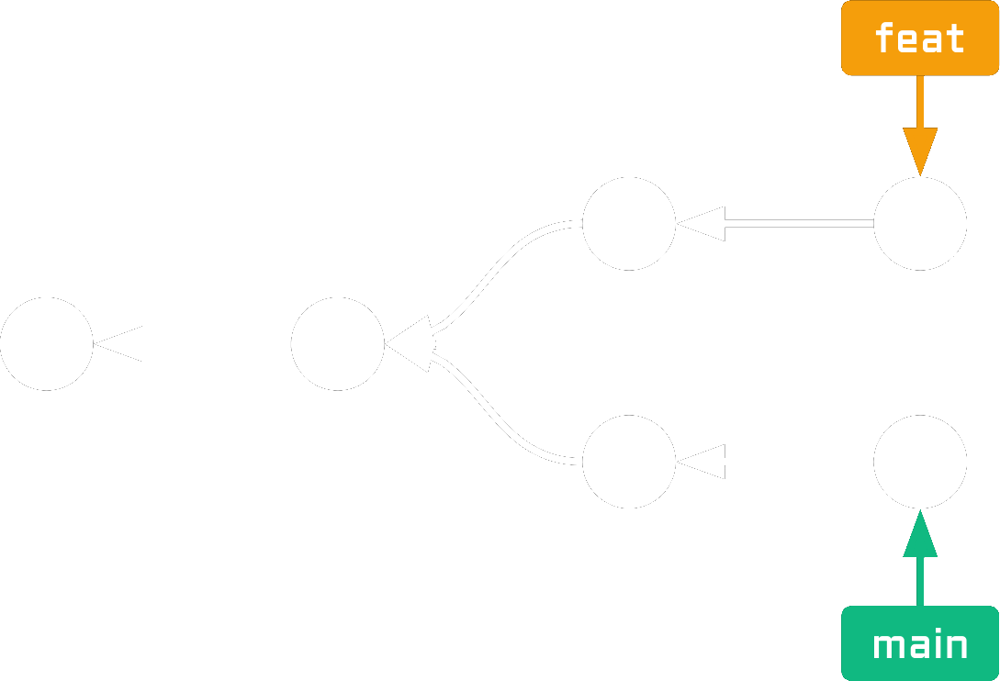
# mergeamos a main lo que hay en featureX
git merge featureX
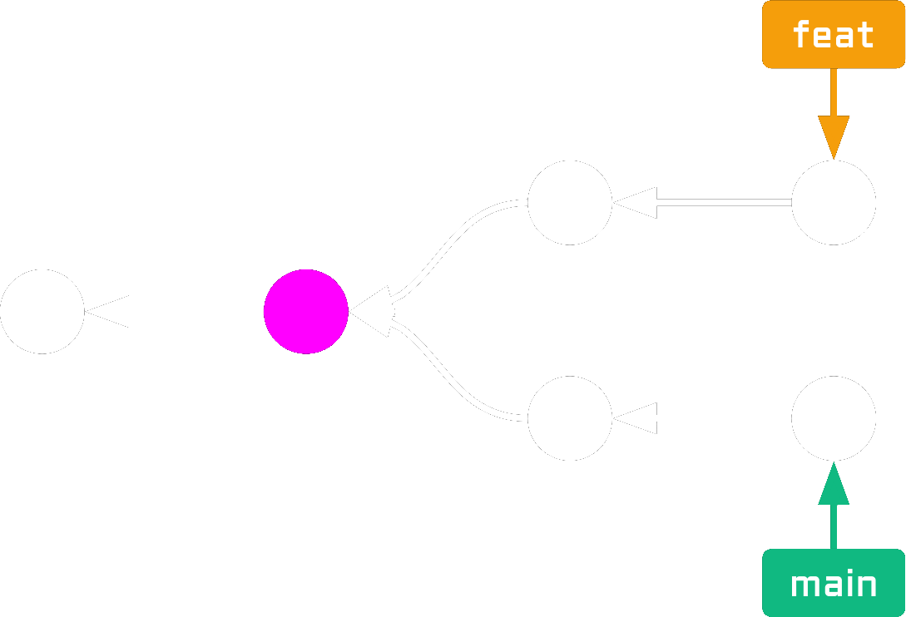
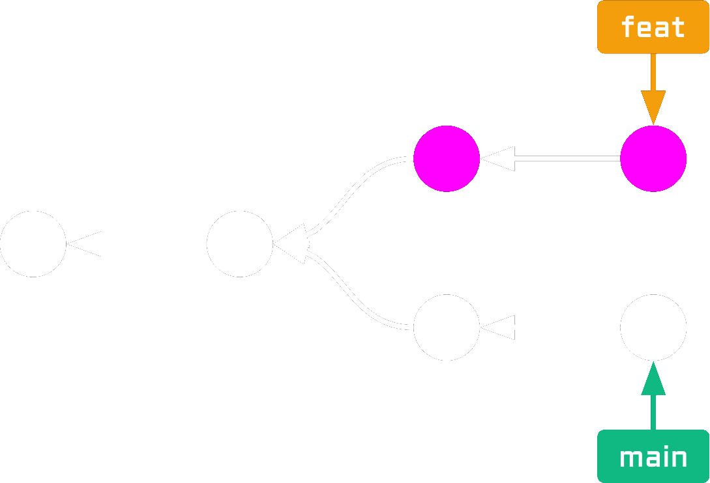
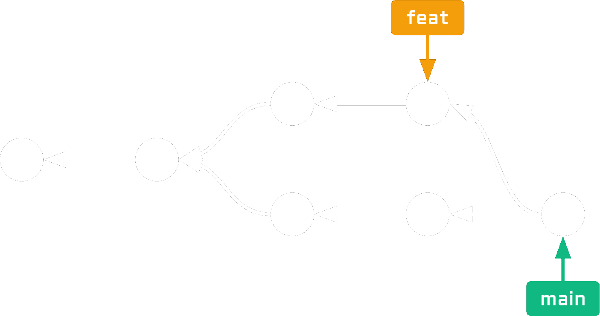
Un merge no es nada super loco que afecte a muchos commits ni a los branches de forma extraña:
Es solo un commit!
Deshacer un merge es una pavada: volver a apuntar al commit anterior y listo.
# des-hacer el último merge
git reset --hard HEAD^1
Merge: casos especiales
Caso 1: qué pasa si hacemos "merge featureX" desde main?
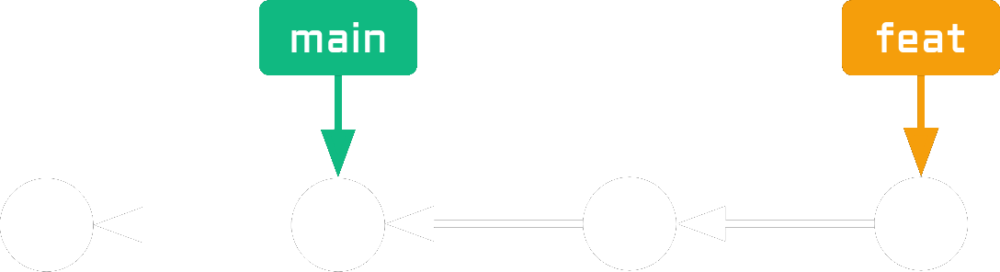
No hace falta un commit! Se hace un "fast forwards": se mueve main a apuntar a lo mismo que featureX.
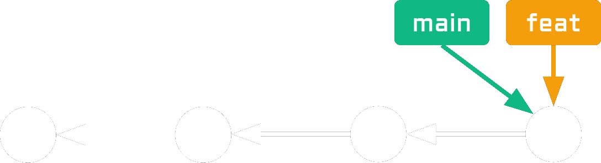
Podemos forzar a que se haga un commit en vez con "git merge featureX --no-ff".
Caso 2: qué pasa si hacemos "merge featureX" desde main?
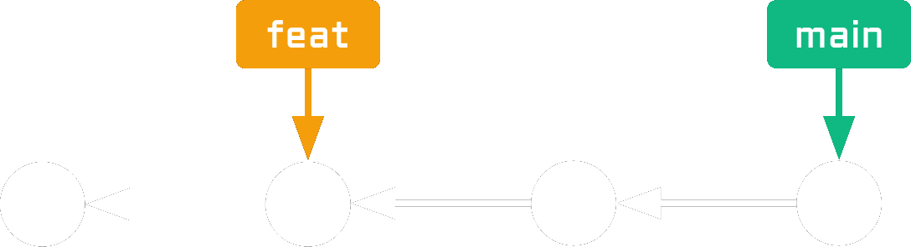
No hace falta nada! No hay commits que no tengamos ya.
Merge: conflictos
Un conflicto es un cambio a mergear que no tiene sentido en nuestro branch.
Ej: en main borramos una función. En featureX se le modificaron líneas. Hacemos merge de featureX a main: queremos modificar líneas que ya no existen! Git no puede saber qué hacer con eso.
No es una falla de Git. Es una contradicción que nosotros produjimos.
✅ Solución: le decimos a mano nosotros a Git cómo queremos que quede el archivo en el commit de Merge, y lo commiteamos.
Cómo evitamos conflictos?
✅ Haciendo merges frecuentes.
✅ Haciendo branches chicos.
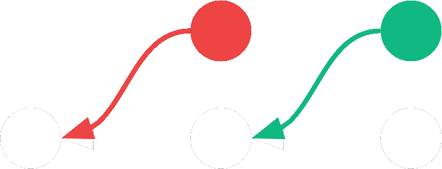
Rebase
Mover commits de un lugar a otro.
Qué hace Git en un rebase?
Ej: estoy en "featureX", y hago "git rebase main"
- Busca el último punto en el que featureX se "separó" de main.
- Busca el commit actual de main.
- Por cada commit de featureX desde que se separó, crea un nuevo commit "igual", pero partiendo de main.
- Al terminar, apunta featureX al último de esos nuevos commits.
# estando parados en featureX,
# "rebaseamos" featureX sobre main
git rebase main
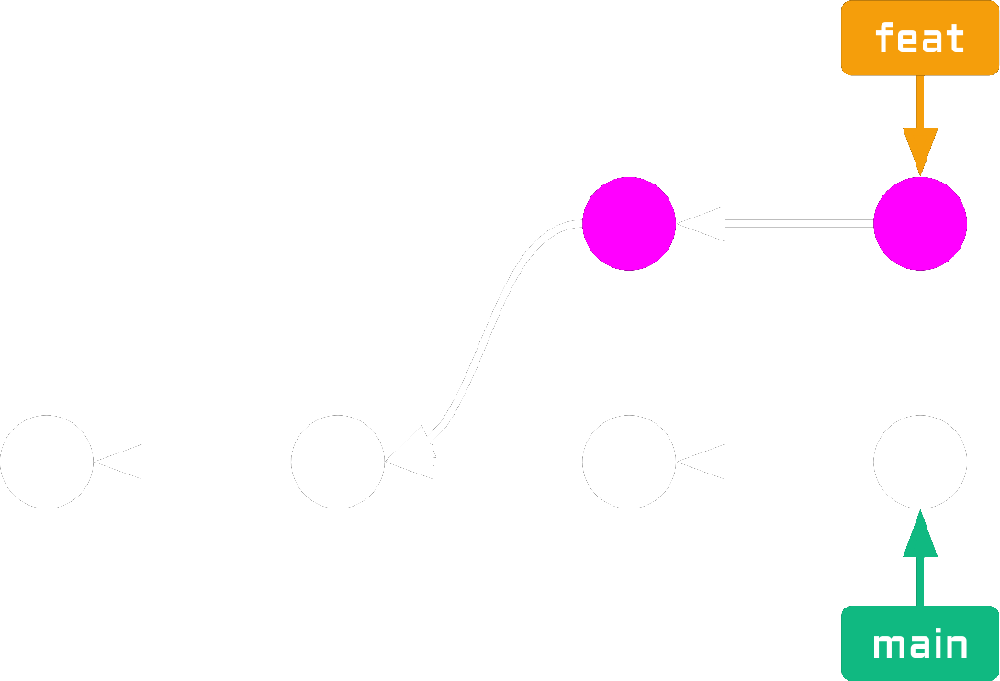
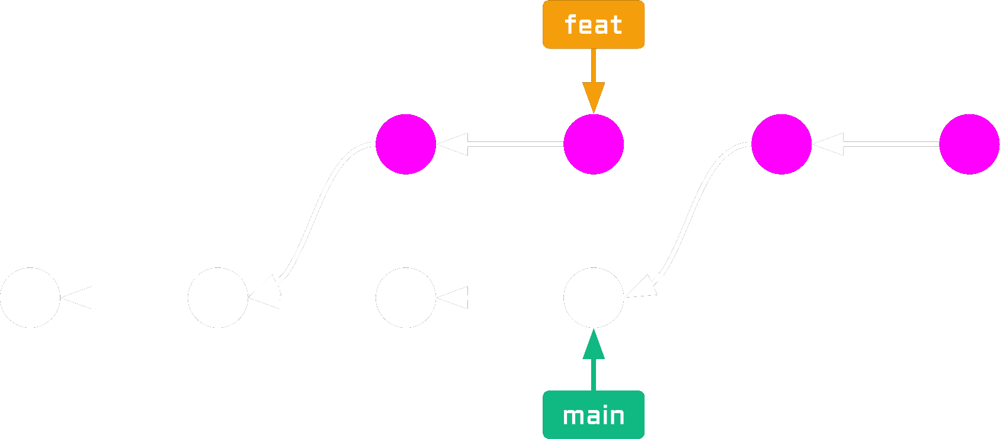
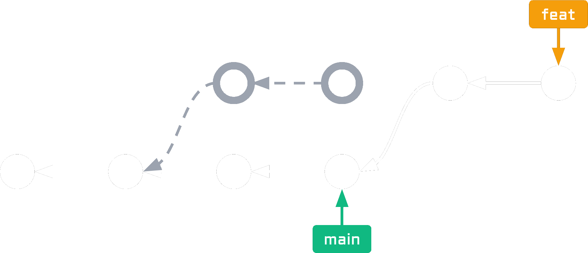
En menos palabras: mueve los commits para que partan desde un nuevo lugar.
Pero creando commits nuevos y olvidándose de los viejos (todo sigue siendo solo lectura).
Como con el merge, es fácil de deshacer: simplemente hacer que featureX vuelva a apuntar a su viejo commit (que sigue en el repo!).
Por qué haríamos un rebase?
Para actualizar nuestro branch: que tenga todo lo último de main por ejemplo.
...No se podría hacer lo mismo con merge?
Sí, pero la historia queda más entendible con rebase!
En palabras no es obvio, pero con un ejemplo se entiende :)
Merge vs Rebase
Ejemplo: trabajamos unos días en featureX que salió de main. Pero mientras tanto gente subió muchas otras cosas a main.
Ahora queremos probar nuestro trabajo en featureX pero incluyendo todo lo que hay en main.
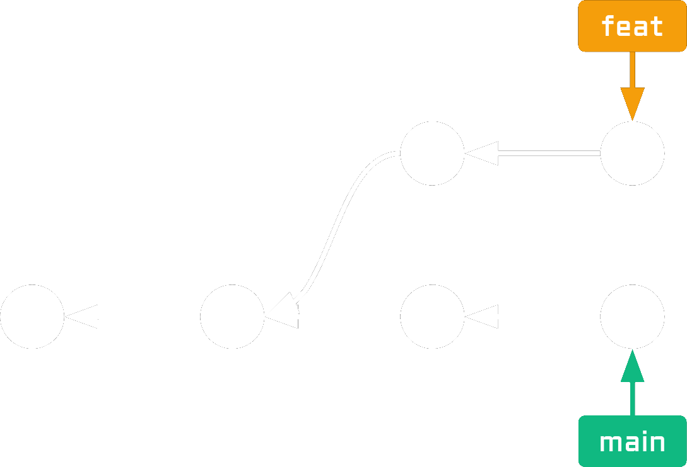
Opción 1: con merge.
# parados en featureX, nos traemos lo nuevo de main
git merge main
# ahora featureX tiene todo lo de main que nos faltaba!
# probamos, arreglamos cosas que se rompieron al combinar todo
git commit -m "arreglados bugs al mergear main" server.py
# todo listo, lo mergeamos en main
git switch main
git merge featureX --no-ff # se suele hacer así
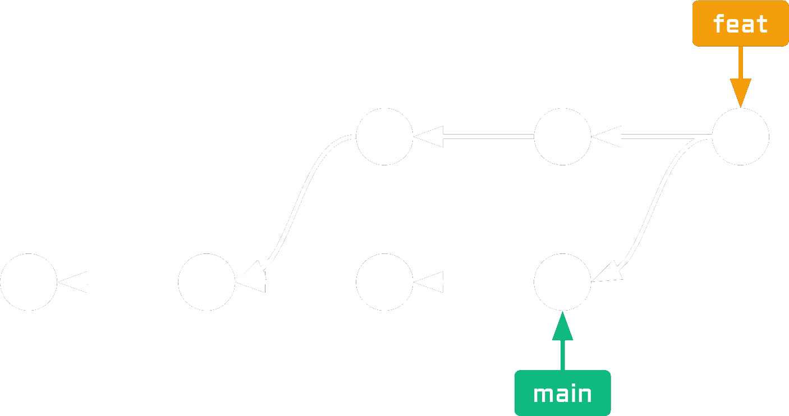
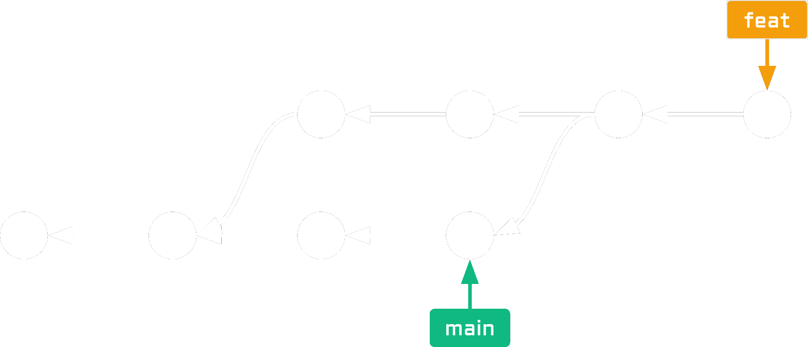
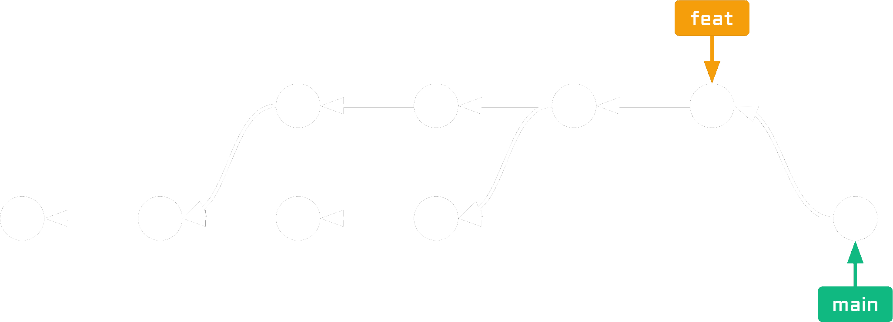
Opción 2: con rebase.
# parados en featureX, rebaseamos sobre main
git rebase main
# ahora featureX tiene todo lo de main que nos faltaba!
# probamos, arreglamos cosas que se rompieron al combinar todo
git commit -m "arreglados bugs al mergear main" server.py
# todo listo, lo mergeamos en main
git switch main
git merge featureX --no-ff # se suele hacer así
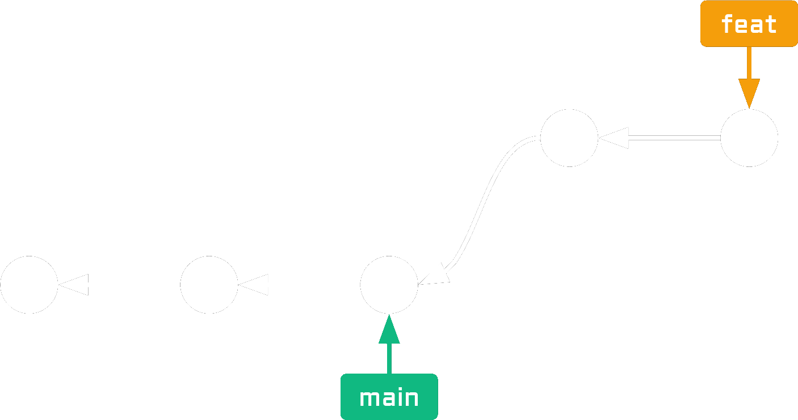
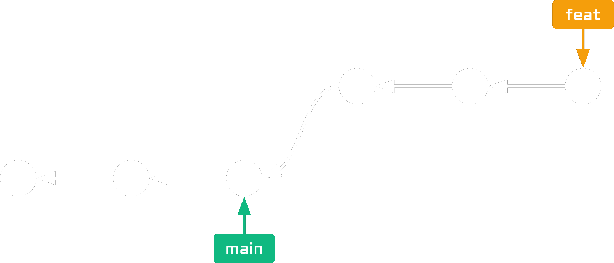
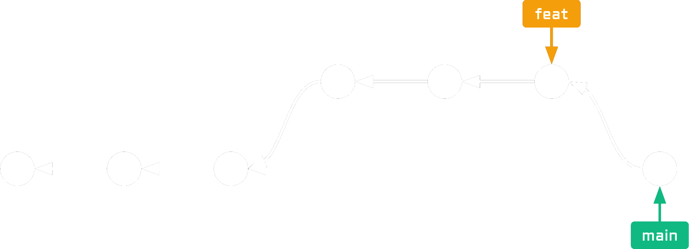
Git Flow
Estandarizando la forma de usar branches.
- En qué branch trabajamos?
- En qué branch están las cosas estables?
- De dónde salen los branches de "feature X"?
Hay muchas formas de organizarse, pero hay un par de patrones que se usan mucho.
Git Flow es el más popular.
Branches de Git Flow:
- Main: estable, siempre deployable, "production ready".
- Develop: donde se hace el desarrollo, puede estar inestable.
- FeatureX: para trabajar en features, salen de develop y se mergean a develop (rebase o no).
- ReleaseX: para preparar un release, salen de develop y se mergean a main y develop.
- HotfixX: para arreglar bugs en producción, salen de main y se mergean a main y develop.
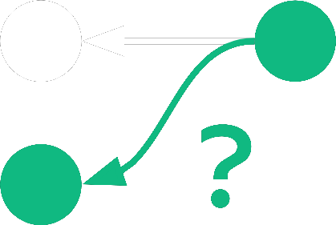
Pull Requests y Reviews
🧙♂️ YOU SHALL NOT PASS
Hoy es habitual:
- No mergear directamente a main o develop.
- Hacer un PR (pull request) o MR (merge request) para que alguien revise los cambios.
- Requerir al menos un approve (o más?) del PR para poder mergear los cambios.
- Al tener los approves, mergeamos desde GitHub/GitLab/etc mismo, no a mano.
Pero... por qué?
✅ Ayuda a encontrar problemas temprano.
✅ Ayuda a repartir ownership!: ya no más "solo pepito vió esto".
✅ Ayuda a transmitir conocimiento a gente nueva: revisando PRs ven cómo trabajamos, haciéndoles reviews los ayudamos a mejorar.
Algunos desafíos...
🚩 Lleva tiempo y esfuerzo.
🚩 No caer en dar approves "para sacármelo de encima", es inútil.
🚩 Requiere saber dar feedback respetuosa/amistosamente. No todos somos buenos en eso.
🚩 Requiere saber recibir feedback. No todos somos buenos en eso.

En empresas de tech muy serias, hacer buenas reviews es tanto o más importante que escribir buen código.
🧑🤝🧑 Hacer crecer a otros es mucho más valioso y productivo que hacer todo uno mismo.
🤖 Y en la era de IA escribiendo código, saber revisarlo es muy valioso también.